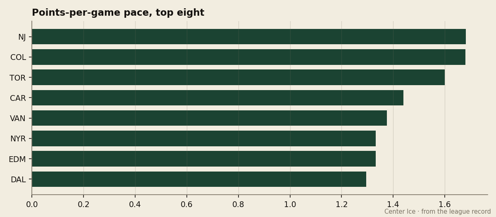

Award Watch: the Vezina is Brodeur's to lose, and the Devils are the third team nobody ranked
New Jersey's points-per-game pace is the best in the league, their cost-per-point is the cheapest, and Martin Brodeur's numbers are ahead of everyone who has played enough games to qualify.
The Blaine Rankings have spent 2 weeks establishing what  Toronto Maple Leafs and
Toronto Maple Leafs and  Colorado Avalanche have done to the field: a combined 82 points in 50 games, a goal differential that stretches from +71 to +58, and a gap to third place that now looks less like a gap and more like a different sport. But the question that follows any separation is always the same one, and the standings answer it on the sheet: who is the third team, and can they be chased?
Colorado Avalanche have done to the field: a combined 82 points in 50 games, a goal differential that stretches from +71 to +58, and a gap to third place that now looks less like a gap and more like a different sport. But the question that follows any separation is always the same one, and the standings answer it on the sheet: who is the third team, and can they be chased?
The answer, on the numbers, is  New Jersey Devils. The Devils sit 3 points behind Toronto in the standings, 5 behind Colorado, but they have done it in 22 games — 3 fewer than either of the clubs above them. Their points-per-game pace is the best in the league, ahead of Colorado's and Toronto's. If New Jersey simply continued at this rate, they would finish above the field in a way that would make the Toronto expression look pedestrian.
New Jersey Devils. The Devils sit 3 points behind Toronto in the standings, 5 behind Colorado, but they have done it in 22 games — 3 fewer than either of the clubs above them. Their points-per-game pace is the best in the league, ahead of Colorado's and Toronto's. If New Jersey simply continued at this rate, they would finish above the field in a way that would make the Toronto expression look pedestrian.

The goal differential tells the same story in a different register. At +27, the Devils are third in the league, well clear of the fourth-place  Vancouver Canucks at +18 and the fifth-place
Vancouver Canucks at +18 and the fifth-place  Dallas Stars at +16. They have allowed 63 goals in 22 games, a rate of 2.86 per contest that is second only to Colorado's 2.68 among clubs that have played more than 20. On the road, where most teams collapse, New Jersey is 9-1. That is not a team that is getting lucky; that is a team that is difficult to beat anywhere.
Dallas Stars at +16. They have allowed 63 goals in 22 games, a rate of 2.86 per contest that is second only to Colorado's 2.68 among clubs that have played more than 20. On the road, where most teams collapse, New Jersey is 9-1. That is not a team that is getting lucky; that is a team that is difficult to beat anywhere.
And they are doing it for the least money in the league. New Jersey Devils's payroll of $44.98M is the third-lowest of the 30 clubs, and their cost-per-point of $1.22M is the cheapest in the league by a clear margin — the next-best figure is Vancouver Canucks at $1.06M, but Vancouver has played 24 games and accumulated only 33 points, which makes their per-point cost misleading in the direction of apparent value. The Devils' $1.22M per point is built on a 22-game sample with a .841 winning percentage, and it will not move much from here. Their revenue of $48.96M is second only to Toronto's $57.01M, and their profit of $29.17M is second only to  Minnesota Wild's $31.47M, though Minnesota's comes from a payroll of $29.97M and 17 points, which is a different kind of profitability.
Minnesota Wild's $31.47M, though Minnesota's comes from a payroll of $29.97M and 17 points, which is a different kind of profitability.
The Vezina race, which I will examine more closely in a moment, belongs to  Martin Brodeur92 by every measure that matters at the quarter-mark. He has 16 wins, the most in the league, on a 2.48 goals-against average that leads all qualified goaltenders. His save percentage of 0.886 is second only to
Martin Brodeur92 by every measure that matters at the quarter-mark. He has 16 wins, the most in the league, on a 2.48 goals-against average that leads all qualified goaltenders. His save percentage of 0.886 is second only to  Ed Belfour91's 0.907, and Belfour has played 10 games to Brodeur's 20. Brodeur's overall grade of 94 is the highest of any goaltender in the league, a full 2 points ahead of
Ed Belfour91's 0.907, and Belfour has played 10 games to Brodeur's 20. Brodeur's overall grade of 94 is the highest of any goaltender in the league, a full 2 points ahead of  Marty Turco94 at Dallas Stars and tied with
Marty Turco94 at Dallas Stars and tied with  Roberto Luongo93 at
Roberto Luongo93 at  Florida Panthers, who has 7 wins and a 3.18 GAA. If the standings hold, if Brodeur holds this level, the Vezina is his by the end of March, and the only argument anyone will make is whether a 22-game sample is too small to lock in a prediction this early. I do not think it is. His numbers from the last 10 games — the Devils have allowed 27 goals in that stretch, 2.70 per game — are consistent with the season total, which means this is not a hot streak that will regress. It is who he is.
Florida Panthers, who has 7 wins and a 3.18 GAA. If the standings hold, if Brodeur holds this level, the Vezina is his by the end of March, and the only argument anyone will make is whether a 22-game sample is too small to lock in a prediction this early. I do not think it is. His numbers from the last 10 games — the Devils have allowed 27 goals in that stretch, 2.70 per game — are consistent with the season total, which means this is not a hot streak that will regress. It is who he is.
The supporting cast is built for this kind of efficiency.  Jamie Langenbrunner86 has 43 points in 22 games, a pace of 160 over a full season, and he is doing it on 23.1 minutes a night, which means the coaching staff trusts him in every situation and he has answered with production.
Jamie Langenbrunner86 has 43 points in 22 games, a pace of 160 over a full season, and he is doing it on 23.1 minutes a night, which means the coaching staff trusts him in every situation and he has answered with production.  Scott Gomez82 has 39 points in 22 games and a pace of 145, and at 24 he is entering the window where a second-line center becomes a first-line center if the system lets him. The Devils' top centers and their top right wing are all under 30, which means the window is open now and the window will not close quickly.
Scott Gomez82 has 39 points in 22 games and a pace of 145, and at 24 he is entering the window where a second-line center becomes a first-line center if the system lets him. The Devils' top centers and their top right wing are all under 30, which means the window is open now and the window will not close quickly.
The week ahead offers the test. New Jersey Devils hosts Vancouver Canucks on December 4, welcomes  Pittsburgh Penguins on December 6, and plays at Toronto Maple Leafs on December 7. The Toronto game is the one that matters for the standings picture: a win there would cut the gap to 3 points in 24 games, and it would mean New Jersey has beaten the team above them head-to-head before the calendar turns. A loss widens the gap and keeps the two-team separation intact. I am logging the prediction now: if the Devils lose at Toronto, I will still write in March that this is the best third team in the league, because the numbers do not permit any other conclusion.
Pittsburgh Penguins on December 6, and plays at Toronto Maple Leafs on December 7. The Toronto game is the one that matters for the standings picture: a win there would cut the gap to 3 points in 24 games, and it would mean New Jersey has beaten the team above them head-to-head before the calendar turns. A loss widens the gap and keeps the two-team separation intact. I am logging the prediction now: if the Devils lose at Toronto, I will still write in March that this is the best third team in the league, because the numbers do not permit any other conclusion.
What is most striking about New Jersey Devils, from an institutional vantage, is that the organization is running the league's best efficiency operation. They are second in revenue, second in profit, first in cost-per-point, and tied for third in points. The attendance figure of 17751 per game is the highest in the league, ahead of Toronto's 17408. The ticket price of $80 is the same as Colorado's and Dallas's, neither of which generates the same profit margin on similar payroll. The Devils are the model organization in this league, and nobody writes about them because the model is quiet and the model does not produce highlights. It produces wins, which is what the standings count.
The Vezina is Brodeur's. The third-team conversation belongs to New Jersey. Both of those will look obvious in April. I am simply saying them in December, because the numbers are there and the numbers are not going anywhere.